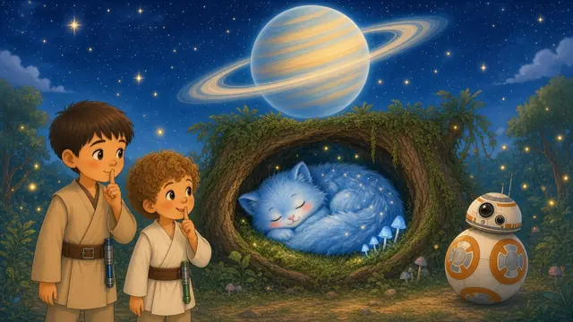
卡雅的好夢夜：阿詹克洛斯上的小小聲
Kaya's Sleepy Night on Ajan Kloss
▶ 讀故事 Read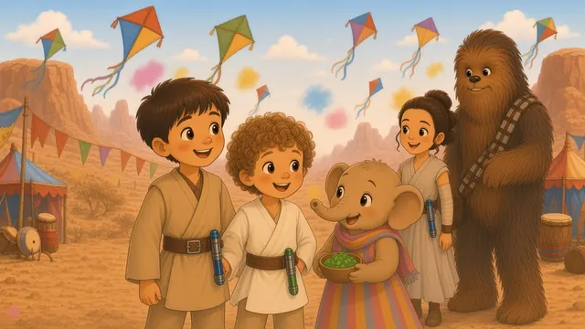
波比的慶典食物：帕薩納星上的「不用了，謝謝」
Poppi's Festival Food on Pasaana
▶ 讀故事 Read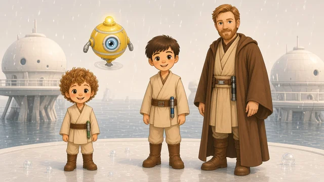
桑尼學飛：卡米諾星上的加油聲
Sunny Learns to Fly on Kamino
▶ 讀故事 Read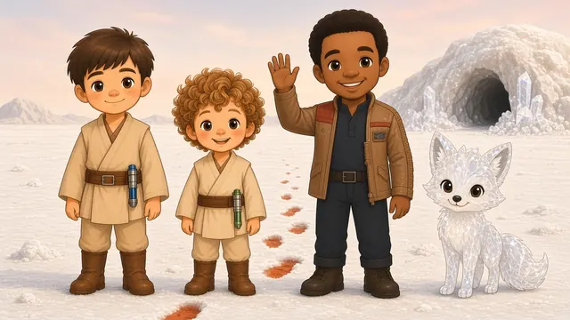
汀卡的水晶洞：克瑞特星上先問再抱抱
Tinka's Crystal Cave on Crait
▶ 讀故事 Read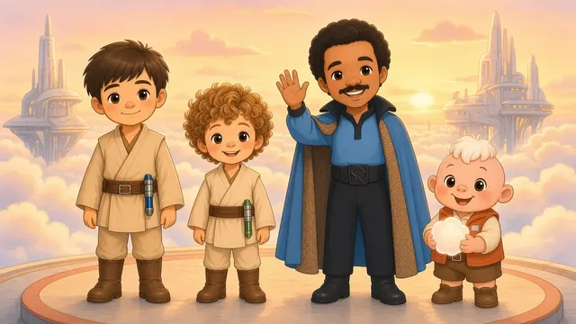
皮姆的雲球：貝斯平星雲城上的分享
Pim's Cloud Ball on Bespin
▶ 讀故事 Read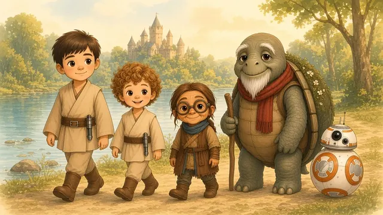
盧米爺爺慢慢走：塔科達納星上的禮讓長輩
Grandpa Rumi's Slow Walk on Takodana
▶ 讀故事 Read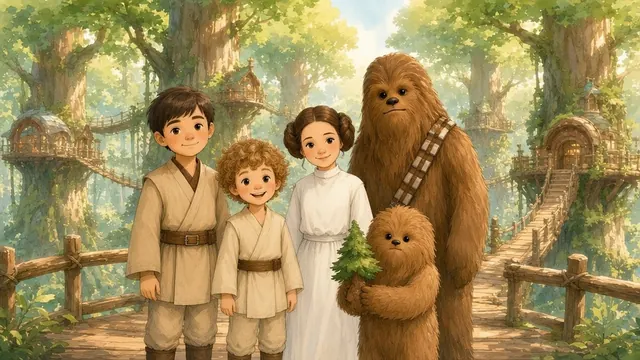
瓦瓦的樹屋：卡希克星上先敲門
Wawa's Tree Home on Kashyyyk
▶ 讀故事 Read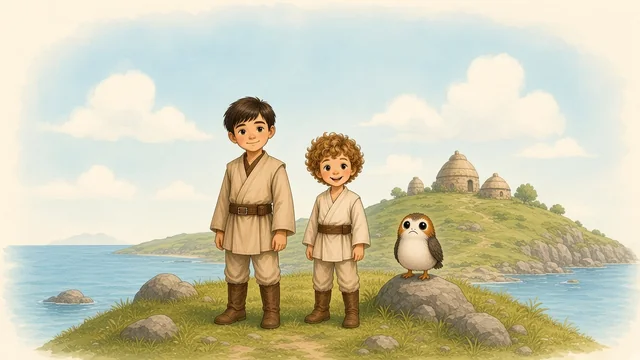
妮妮的鳥巢：阿奇托星上的輕輕溫柔
Nini's Nest on Ahch-To
▶ 讀故事 Read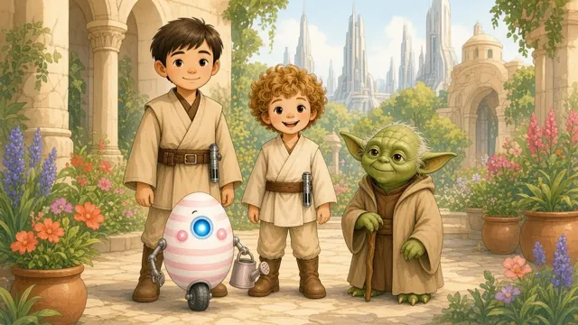
琪琪的花園：絕地聖殿的溫暖話語
Kiki's Garden at the Jedi Temple
▶ 讀故事 Read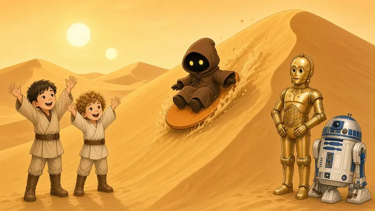
塔圖因的沙丘溜滑梯
Tiko's Sand Slide on Tatooine
▶ 讀故事 Read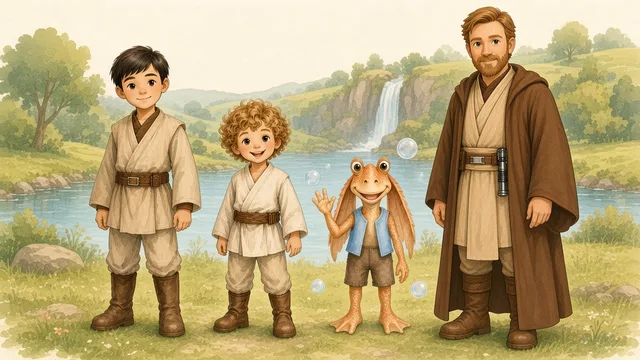
那布星上Bibo的泡泡聲音
Bibo's Bubbly Voice on Naboo
▶ 讀故事 Read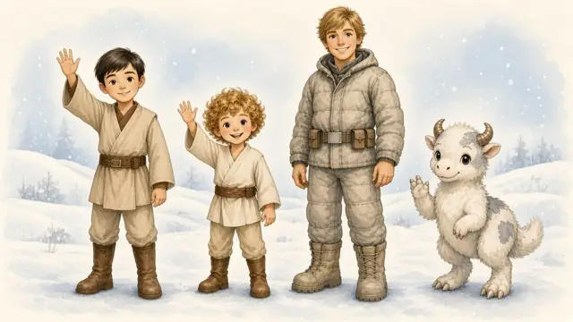
霍斯星的小Pobo
Little Pobo on Hoth
▶ 讀故事 Read千年鷹號上的閃亮盒子
The Shiny Box on the Millennium Falcon
▶ 讀故事 Read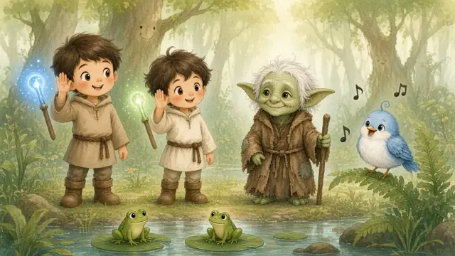
在達哥巴學傾聽
Listening on Dagobah
▶ 讀故事 Read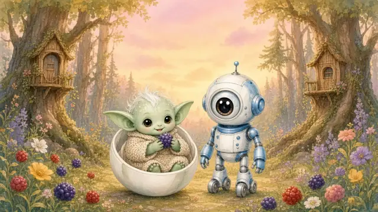
古古學會神奇的話
Grogu Learns the Magic Word
▶ 讀故事 Read